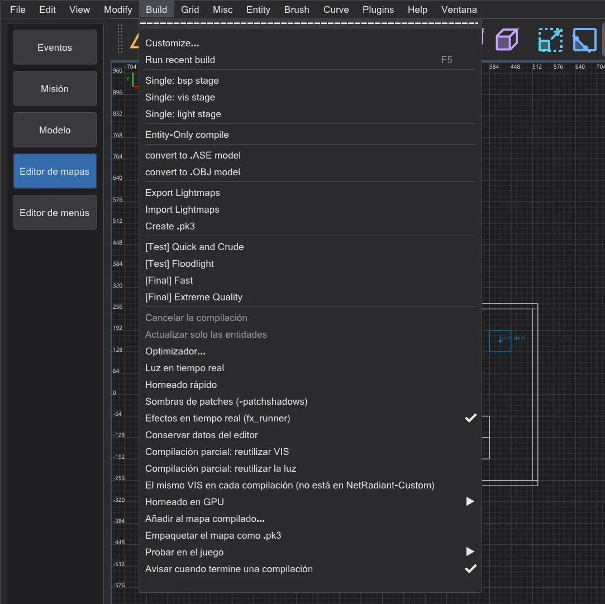
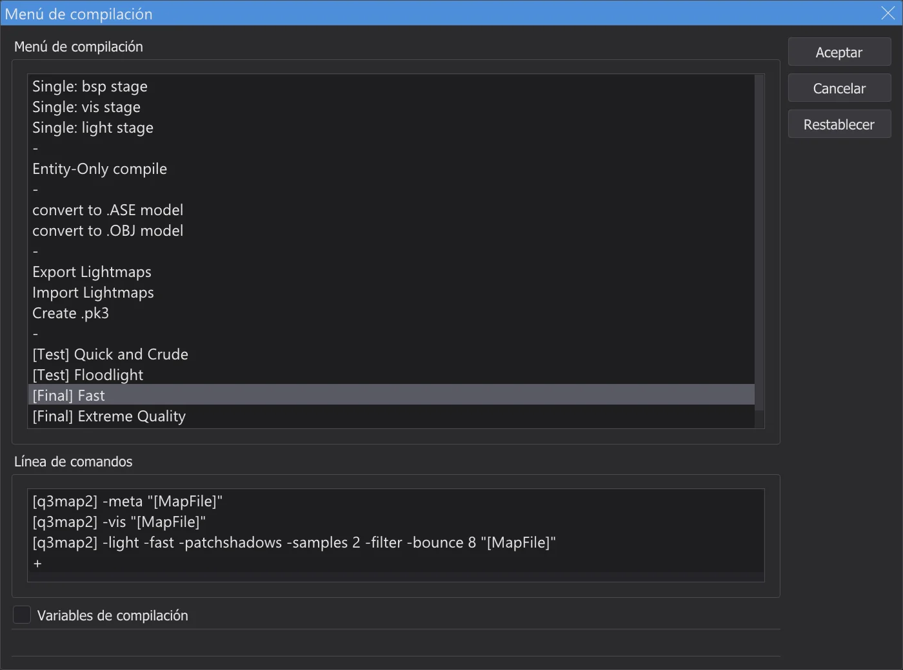
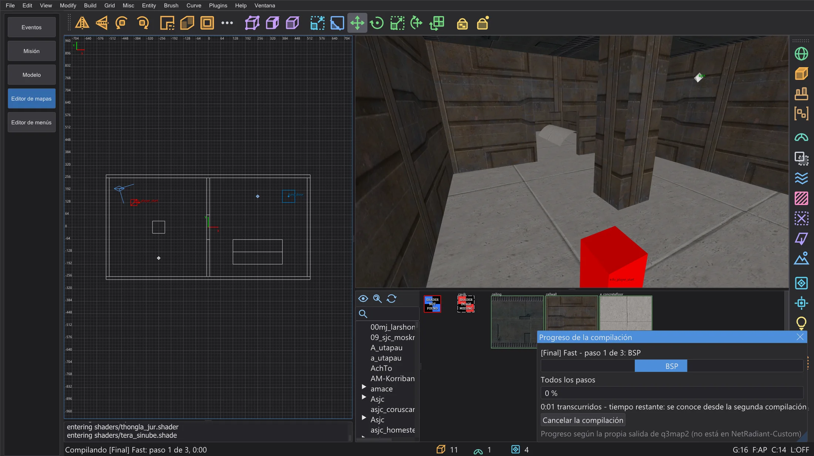
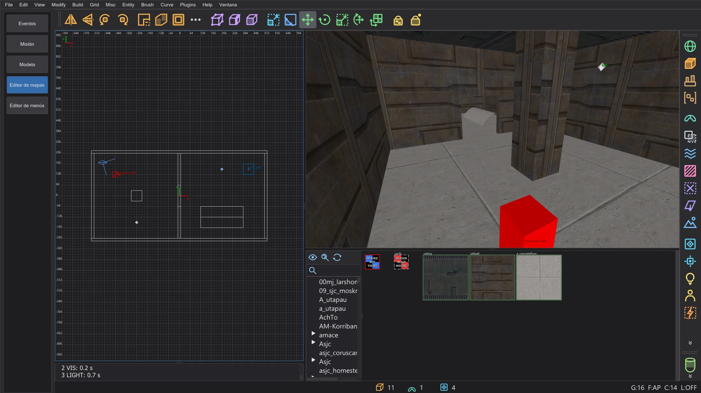
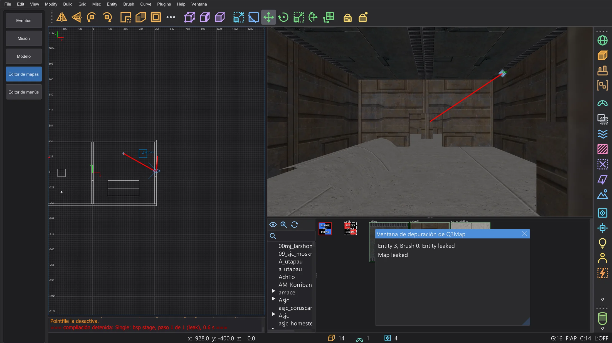
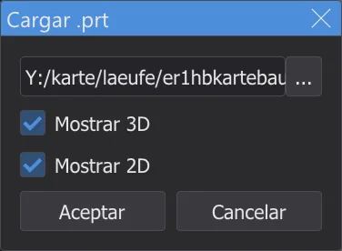
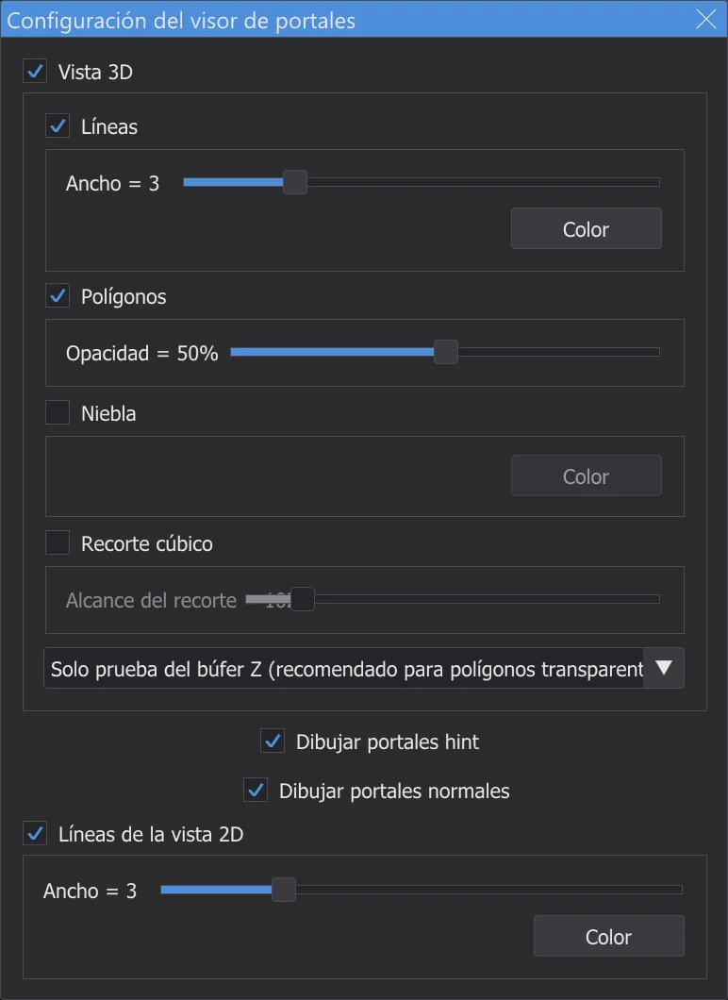
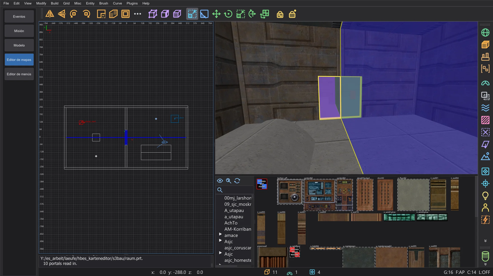
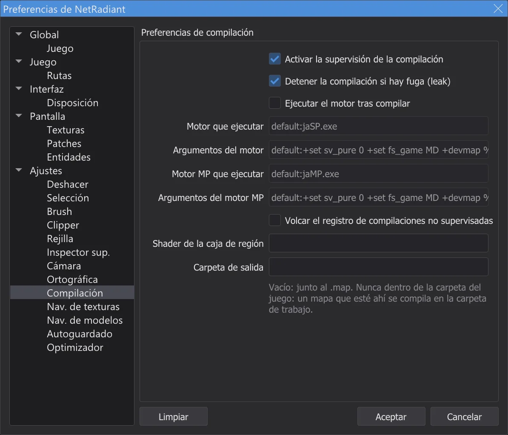

Editor de mapas: compilar el mapa
Convierte el mapa en un .bsp jugable con q3map2 desde el menú Build: se ejecuta en segundo plano con su salida en la consola, muestra las fugas como una línea roja y los portales si se pide, y nunca escribe en la carpeta del juego.
El menú ⟦Build⟧#

Cada entrada ejecuta uno o varios comandos de q3map2 sobre el mapa. El compilador de mapas bhed_q3map2.exe es el q3map2 de NetRadiant-Custom, compilado con el programa y distribuido junto a jkstudio.exe; produce los mismos resultados. Run recent build (F5) repite la última entrada. Customize abre el diálogo Menú de compilación: las entradas y sus comandos se pueden añadir (doble clic en el +), renombrar, reordenar arrastrando (con Ctrl se copian) y eliminar; Variables de compilación muestra las variables como [MapFile] y [q3map2]. El menú se guarda al cerrar el editor de mapas.

Las tres etapas#
| Etapa | Qué hace |
|---|---|
BSP (-meta) | Convierte brushes y patches en el árbol BSP y las superficies, escribe .bsp, .prt y .srf. Si el mapa no está sellado, se detiene con una fuga. |
VIS (-vis) | Calcula qué zonas pueden verse entre sí, para que el juego dibuje menos. Necesita el archivo de portales de la etapa BSP. |
LIGHT (-light) | Hornea la luz de las entidades de luz y del cielo en lightmaps y la rejilla de luz. |
[Test] Quick and Crude ejecuta las tres etapas rápidamente para un primer vistazo, [Final] Fast y [Final] Extreme Quality dan a la luz su calidad real. Las etapas sueltas sirven mientras trabajas en una parte, por ejemplo solo Single: light stage tras mover luces.
Mientras compila#

- 1
Primero se guarda el mapa (un mapa sin nombre pide un nombre). Con una región, solo se compila la región (
<mapa>.reg). - 2
q3map2 arranca sin ventana e informa por una conexión local, como en NetRadiant-Custom. Los avisos aparecen en amarillo, los errores en rojo; un error detiene los pasos restantes.
- 3
Puedes seguir trabajando: mirar alrededor, seleccionar, editar. Build > Cancelar la compilación termina q3map2.
- 4
Al final, una línea nombra la entrada, los pasos y el tiempo, y el código de salida de q3map2 si no fue 0.

La consola tras [Final] Fast.

junk.txt en la carpeta de ajustes.Encontrar fugas#

El interior de un mapa debe estar sellado por brushes. Si q3map2 encuentra un camino de una entidad al vacío, la etapa BSP se detiene con MAP LEAKED (en rojo), y la línea de fuga aparece en rojo en las vistas 2D y en la cámara. La Ventana de depuración de Q3Map lista la entidad desde la que se fuga: un clic la selecciona.
| Ctrl+Mayús+K | Next leak spot: la cámara y las vistas 2D al siguiente punto de la línea, mirando a lo largo de ella |
| Ctrl+Mayús+L | Previous leak spot: vuelve al punto anterior |
Sigue la línea hasta que salga del mapa: ahí está el agujero. Ciérralo y compila de nuevo. File > Pointfile desactiva y activa la línea (lee <mapa>.lin); guardar el mapa la quita.
Mostrar portales#




Los portales son las aberturas entre las zonas con las que trabaja la etapa VIS. Plugins > prtview > Load .prt file carga el archivo de portales de la última etapa BSP (Mostrar 3D, Mostrar 2D): en la cámara cada portal es un polígono de color semitransparente con contorno, en las vistas 2D una línea azul. Muchos portales pequeños donde el jugador ve lejos hacen lento el mapa; los brushes hint y de detalle ayudan. Configure Portal Viewer fija colores, anchos de línea, opacidad, niebla y un cubo de recorte; Toggle portals (3D)/(2D) y Unload .prt file cambian la visualización.

Adónde van los archivos#

El .bsp y los demás archivos se escriben junto al .map, como en NetRadiant-Custom. Carpeta de salida en la página Compilación los pone en cambio en una carpeta de tu elección (el mapa se copia ahí y se compila). Nunca se escribe nada en la carpeta del juego: si el mapa o la carpeta de salida están ahí, la compilación se hace en una carpeta de trabajo de la carpeta de ajustes, y la consola lo dice.
Probar en el juego#
- 1
Copia el
<nombre>.bspcompilado en la carpetamapsdel juego, por ejemploGameData\base\maps(con un mod: su carpeta, p. ej.MD\maps). El editor de mapas no lo hace él mismo: nunca escribe en la carpeta del juego. - 2
Inicia tú mismo el juego, abre la consola con Mayús+~ y escribe
devmap <nombre>, el nombre sin.bsp.devmaptambién permite trucos comonoclipygodpara mirar alrededor. - 3
Tras la siguiente compilación, vuelve a copiar el
.bspy escribe otra vezdevmap <nombre>: el juego carga la versión nueva.
+devmap <nombre>, como en NetRadiant-Custom; el .bsp debe estar entonces ya en una carpeta en la que busque el juego.AutoCaulk#
Brush > AutoCaulk Selected (F4) da la textura caulk a cada cara de los brushes seleccionados que no se puede ver desde dentro: menos superficies, un mapa más rápido. Pon la cámara dentro de la selección; q3map2 decide qué caras están ocultas. Un paso de deshacer lo revierte.